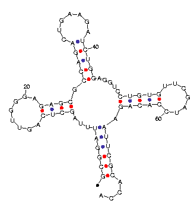

Mfold predicts a number of optimal and suboptimal foldings. They are
automatically predicted in order of increasing free energy, although
this order may change when the more exact efn2 program is used
to re-evaluate free energies. The number of computed foldings is
limited directly by the MAX parameter, and in more subtle ways by the
P and W parameters. It should be stated clearly here that while the
energy dot plot rigorously displays all possible base pairs that can take part in
all possible foldings within
 of
of  ,
the computation of
foldings is arbitrary. They do not represent a statistical sample of
likely foldings, but rather a collection of foldings that show the
variation that is possible within optimal and suboptimal foldings.
,
the computation of
foldings is arbitrary. They do not represent a statistical sample of
likely foldings, but rather a collection of foldings that show the
variation that is possible within optimal and suboptimal foldings.
The collection of triples,
 ,
for all possible base pairs
is sorted in order of increasing
.
The algorithm to
construct foldings proceeds as follows:
,
for all possible base pairs
is sorted in order of increasing
.
The algorithm to
construct foldings proceeds as follows:
Mfold creates a number of files associated with predicted structures. The files marked with an optional ``html'' are created only when RUN_TYPE is html. Files that contain an underscore, `_', in their names enumerate the individual foldings, so that `file_name_i.ct' refers to the ct file for the ith predicted structure.
`FILE_NAME.OUT(.HTML)' : This is a text file (html file)
containing a plain text form of output for each of the predicted
foldings. It is useful because it can always be displayed and is
intelligible for foldings on short sequences. The selected base pairs
for computing each structure are specially marked with a `|' above
and a `^' below. A sample output is shown in Figure 11.
FOLDING BASES 1 TO 76 OF tRNA
Initial ENERGY = -22.3
10
---- UUA AGU
GCGGAU GCUC U
CGCUUA CGAG G
ACCA --A AGG
70 20
30
G CUG
CCAGA
GGUCU A
- AGA
40
50
AGGUC | UUC
CUGUG
GACAC G
----- ^ CUA
60
|  |
| (a) Text | (b) Plot |
|---|
`FILE_NAME_I.CT' : The ``ct'' file (connect
table) contains the sequence and base pair information,
and is meant to be an input file for a structure drawing program. In
addition to containing base pair information, it also lists the 5'and 3' neighbor of each base, allowing for the representation of
circular RNA or multiple molecules. The ct file also lists the
historical base numbering in the original sequence, as bases and base
pairs are numbered according from 1 to the size of the folded
segment. A portion of a ct file is displayed in Figure 12.
76 ENERGY = -24.4 [initially -23.2] yeast tRNA Phe
1 G 0 2 72 1
2 C 1 3 71 2
3 G 2 4 70 3
4 G 3 5 69 4
5 A 4 6 68 5
6 U 5 7 67 6
7 U 6 8 0 7
8 U 7 9 0 8
...
67 A 66 68 6 67
68 U 67 69 5 68
69 U 68 70 4 69
70 C 69 71 3 70
71 G 70 72 2 71
72 C 71 73 1 72
73 A 72 74 0 73
74 C 73 75 0 74
75 C 74 76 0 75
76 A 75 0 0 76
|
`FILE_NAME.DET(.HTML)' : This is a text file (html file)
containing the detailed breakdown of each folding into
loops, and the corresponding decomposition of the overall free energy,
 ,
into the free energy contributions,
,
into the free energy contributions,
 ,
for each loop.
A sample output is shown in Table 4.
,
for each loop.
A sample output is shown in Table 4.
| Loop Free-Energy Decomposition Structure 3 tRNA.seq Initial Free energy = -22.3
|
`FILE_NAME.SS-COUNT' : If l foldings are predicted, then ss-count(i) is the number of times that ri is single stranded in these foldings. Thus ss-count(i)/l is a sample based probability for single strandedness. The ss-count file contains the number of computed foldings in the first record. The ithsubsequent record contains i and ss-count(i). This file may be used to predict which regions of an RNA are likely to be single stranded, and values of ss-count, averaged over a window of perhaps 5 to 25 base pairs, are often plotted. This file is also used for annotating plotted structures.
`FILE_NAME_I.PLT2' : This is an intermediate, device independent plot file. It is the output of mfold's adaptation of the naview program for plotting secondary structures. This file is used as input to the plt22ps and plt22gif programs. It was originally intended to be used as input to the plt2 plotting package [39], but this software is now old and not maintained.
`FILE_NAME_I.PS' : This is a PostScript file of a secondary structure. It is the output of the plt22ps program.
`FILE_NAME_I.GIF' : This is an image file (gif) of a secondary structure. It is the output of the plt22gif program.
The progression from ct file to images of secondary structures is:
`file_name_i.ct'
naview
`file_name_i.plt2'
plt22ps
`file_name_i.ps'
or
`file_name_i.ct'
naview
`file_name_i.plt2'
plt22gif
`file_name_i.gif'
`FILE_NAME.HTML' : This is a simple html file that links together some of the output files. It is an early version of a format originally used by the mfold web server.
`FILE_NAME.LOG' : This is a log file containing the standard output and standard error of the various programs and scripts that make up mfold . It can be useful for debugging.
`FILE_NAME.PNT' : This is a human readable file containing the entire input sequence. Every 10th base is labeled. In addition, auxiliary information is incorporated, if there is any. Bases that are forced to be double stranded have the letter `F' underneath. Those that are forced to be single stranded have the letter `P' underneath. Pairs of rounded brackets `(` and `)' underline forced base pairs, and pairs of curly brackets `{` and `}' underline prohibited base pairs. If 2 disjoint segments are prohibited from pairing with one another, then these segments are highlighted by underlining the residues of the first with a common lowercase letter, and the residues of the second with the same letter in uppercase. Different letters are used for different prohibited pairs. `F' and `P' are not used in this case.
 | Michael Zuker Institute for Biomedical Computing Washington University in St. Louis 1998-12-05 |